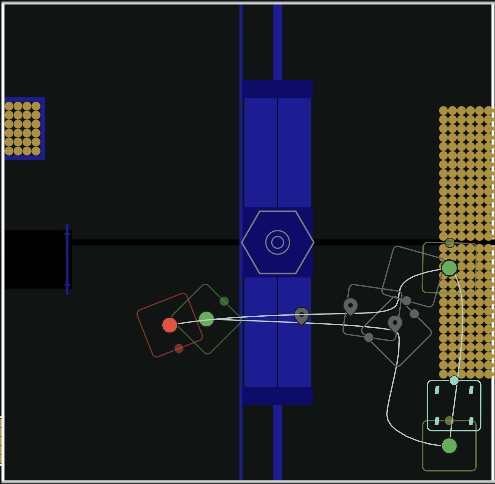
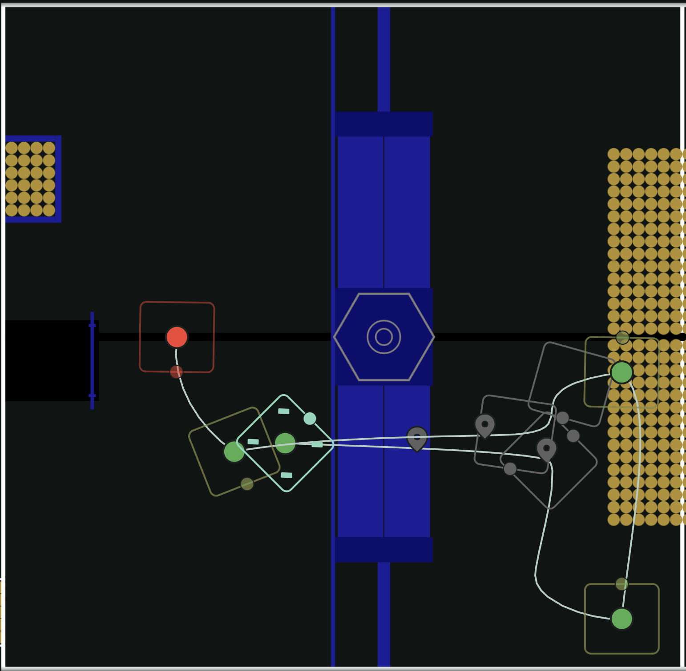
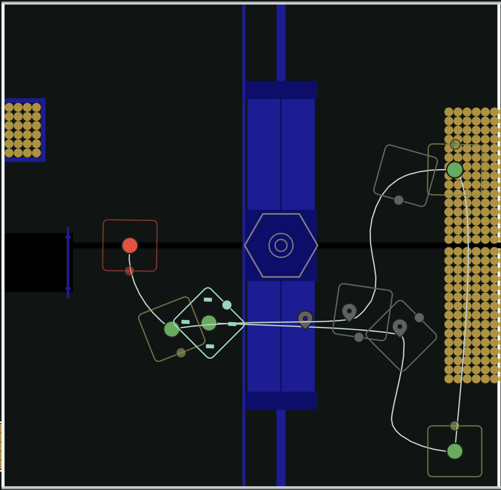
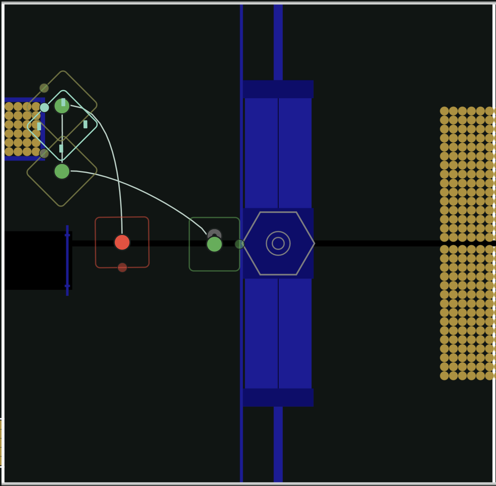

FRC 6045 Programming Website!
FRC 6045 Programming Website!
The purpose of this website is to make it easier to find programming-related things that are used or made by FRC 6045.
6045 2026 autos
This is a diagram of the main auto that 6045 has used the most.

It uses one pass to intake and shoot about 60 fuel.
This is a variation of the previous one.

It changes the place from which the robot shoots to stay out of the way of other robots.
This is another variation.

It travels closer to the hub to pick up the fuel that is there if other teams have already passed through the center.
This auto is not based on the others.

It collects fuel from the depot, then scores it.